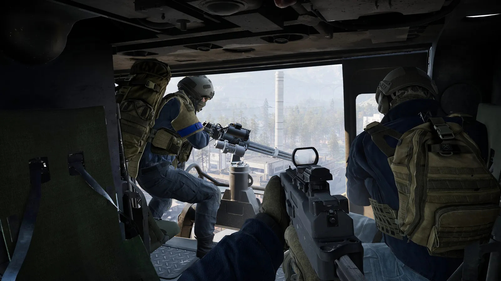
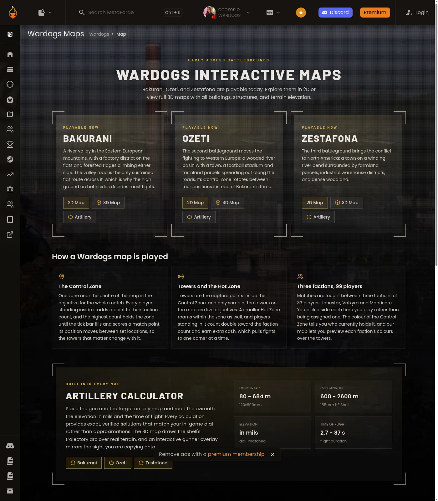

Last checked 14 Sep 2026 · Steam Early Access. Guides may change after patches.
WARDOGS Towers and Hot Zone Guide — Capture, Codes, and Cash (EA)
TL;DR: Towers (often called Drill Towers) are Control Zone hardpoints that yield code digits when captured/hacked. Collect digits → enter them on the tower keypad → start the tower drill / Hot Zone Magnet to pull the Hot Zone toward that tower. Steam store About (2026-09-13): Hot Zone earns double the cash. Presence “counts as two” is a public lead — MetaForge map hub + allthings + games.gg agree (2026-09-13); not Steam store copy. FOB Drill Rigs / Oil Rigs are an alternate pull that need fuel and can be destroyed. This is an editorial flowchart + decision guide — not an interactive map clone. Onboarding → How to Play. Map POIs → Maps. Bankroll → Economy / Starter Loadout.
Last checked 2026-09-13 (Early Access).

One matrix: Control Zone, Hot Zone, tower, code, keypad, FOB
| Concept | What it is | Your job | Win / cash |
|---|---|---|---|
| Control Zone | Store: ~2×2 km primary objective area; 100-player / 3 teams; first to 100 points. Indie map guides also describe a smaller scoring core (~85 m) inside a play-area circle — size conflict below | Contest space, towers, presence | Match win condition |
| Hot Zone | High-value sub-area that moves / can be pulled; store copy: double cash | Be present / fight inside it | Economy spike — see Economy page |
| Tower / Drill Tower | Tall hardpoint; only towers inside the active Control Zone / play area matter | Hold sightlines; hack/capture for a digit | Digit toward full code |
| Code digit | Number revealed after a successful capture; some guides say position in sequence is shown | Write down + share with team | Progress toward drill unlock |
| Keypad | Pad beside main computer (public guides) | Enter full code; limited wrong tries | Starts tower drill / Hot Zone Magnet |
| Tower drill | Immobile puller once code accepted | Defend the tower | Pulls Hot Zone toward tower for a period |
| FOB drill / Oil Rig / Drill Rig | Player-built alternate Hot Zone puller | Supply fuel; protect from arty/drones | Pull without full tower code — logistics cost |
FLOW (editorial — public guide synthesis)
Control Zone fight → Wait opening tower cooldown (GameRant: ~10 min) → Clear tower; second-floor / ops-room computer → Hold Interact until capture completes → Digit N revealed (+ position in sequence per some guides) → Collect all digits for live towers in zone → Keypad entry (limited fails → lockout) → Tower drill / Hot Zone Magnet ON → Hot Zone slides toward that tower (dashed lines on map per allthings.how) → Double-cash window (store) + possible presence pressure ALTERNATE:
Build FOB → Large Hammer → Oil Rig / Drill Rig → fuel → activate → Hot Zone pull without full code → Vulnerable to destroy / anti-logistics / fuel starvation
How to capture / hack a tower
Public guides (GameRant Sep 12, 2026; allthings.how Sep 12, 2026; games.gg Sep 10, 2026) converge on a similar loop. Mark conflicts — do not invent timers beyond what guides state.
| Step | Action (public) | Notes |
|---|---|---|
| 2 | Clear enemies; panel may not respond while contested | allthings.how; GameRant less explicit |
| 4 | Interact with main computer / console; hold Interact until hack/capture finishes | Bind name may vary — often F on KBM (Bisect / allthings leads) — Controls page |
| 5 | Read digit on screen (and position if shown); tell squad; write it down | Digits are per-tower; full set needed for keypad |
| 8 | Defend tower / exploit sightlines; rotate squad into inbound Hot Zone | AA / sniper value — tactical, not required for code |
Capture vs code vs magnet
| Action | Pays / reveals | Moves Hot Zone? | Sources |
|---|---|---|---|
| Capture / hack tower | Cash (guides) + one digit | No | GameRant, allthings, games.gg |
| Enter full code on keypad | Activates tower drill / magnet | Yes — pull toward that tower | Same |
| Fuel + activate FOB Oil Rig | Logistics spend | Yes — pull toward FOB | allthings oil-rig guide; GameRant contrast |
Community conflict table (Source A vs B)
| Topic | Source A | Source B | Our stance |
|---|---|---|---|
| Hot Zone double cash | Steam store About (2026-09-13): “earn double the cash” | Indie guides echo double cash | Store-explicit; HUD reproduction = public lead |
| Hot Zone “counts twice” toward points | MetaForge hub + allthings + games.gg: player in Hot Zone counts as two for faction presence; ~30s scoring ticks | Steam store emphasizes double cash, not presence math | public lead — MetaForge/allthings/games.gg agree (not store copy) |
| FOB vs tower priority (pubs) | GameRant: FOB drill often easier in pubs; towers stronger if coordinated | games.gg: towers overlooked; teams that pull Hot Zone to owned ground win more | Decision tree below — not a forever meta |
| Code persistence | tpose / allthings: code fresh each match; resets after successful activate | — | Do not carry codes across matches |
| GameWatcher towers page | URL exists in SERP | Fetch bot-walled (Cloudflare) on 2026-09-13 | Cite URL; do not invent content |
Bakurani / Ozeti / Zestafona tower counts
| Map / area | Tower count (dated) | Source | Status |
|---|---|---|---|
| Bakurani — Default play area | 5 drill towers (2× pick weight) | allthings Bakurani (2026-09-13) | public lead — allthings |
| Bakurani — Farmland | 5 | same | public lead — allthings |
| Bakurani — Lumberyard | 3 | same | public lead — allthings |
| Ozeti — Default | 4 | allthings Ozeti (2026-09-13) | public lead — allthings |
| Ozeti — Church | 3 | same | public lead — allthings |
| Ozeti — River | 2 | same | public lead — allthings |
| Ozeti — Farmland | Out of objective rotation (transit only) | same | Status lead |
| Zestafona | Towers discussed; MetaForge hub 2026-09-13: Playable now | MetaForge map hub; allthings Zestafona guide | public lead — MetaForge playability; tower counts still public lead |
Rule: Prefer a dated screenshot of the in-match map with towers marked over copying undated third-party totals. MetaForge-style interactive maps own the clickable layer — we own the decision logic. Only towers inside the active Control Zone / play area function as code objectives.
Double cash, presence math, Hot Zone
| Claim | Basis | Publish |
|---|---|---|
| Hot Zone grants double cash | Steam store About 2026-09-13 | Store-explicit; HUD proof = public lead |
| Cash persists match to match | Steam store | Cross-link Economy |
| Journey starts with $10,000 | Steam store | Economy page for spend discipline |
| Presence “counts twice” toward points | MetaForge hub + allthings + games.gg (dated 2026-09-13) | public lead — three public sources agree — not store copy |
| First to 100 points wins | Store / press framing | How-to-Play win condition |
Economy tease: Pulling Hot Zone onto a tower (or FOB) you already own turns a sightline fight into a bankroll fight. Do not dump your entire wallet the first time you see yellow on the map — see Economy starter rules.
games.gg presence example (editorial paraphrase,): if rivals have more bodies in the Control Zone but your squad stacks Hot Zone, effective presence can flip a tick — only if double-count is real on your build.
When NOT to contest towers
Use this before you burn a squad wipe for one digit.
| Situation | Better play | Why |
|---|---|---|
| Your team already fuels a safe FOB drill and Hot Zone is coming to you | Guard logistics; harass enemy towers lightly | Tower assault cost > benefit |
| You have 0 digits and enemies hold all live towers with FOBs up | Cut fuel lines / destroy FOB drill | Full clear may be impossible mid-match |
| Match point total almost decided without Hot Zone | Play objective ticks / spawns | Late code may not flip 100 pts |
| Squad is broke / no ammo after wipe | Rearm via Economy discipline | Dead squads don’t hack computers |
| Keypad already lockout-locked | Wait timer; defend elsewhere | Feeding lockout wastes lives |
| You are learning controls in first 30 minutes | Follow How to Play checklist first | Tower meta after spawn/buy loop clicks |
| Pub team not sharing digits in chat | Grab one safe digit OR FOB path | Solo full-code clears fail in pubs (GameRant) |
Contest vs ignore decision tree
Need Hot Zone cash/pressure?
│
├─ Team has full code ready?
│ ├─ YES → Enter keypad on a *fortified* tower (FOB/supplies ready) → defend
│ └─ NO → Can you safely hack 1–2 undefended towers?
│ ├─ YES → Grab digits; broadcast (“XX6” style callouts)
│ └─ NO → FOB drill path or ignore for now
│
├─ Enemy tower drill already pulling Hot Zone onto their fortress?
│ └─ Disrupt with coordinated push OR counter with your FOB drill
│
└─ Pub team not responding on voice/text?
└─ Default: FOB drill / local objectives — don’t solo-hero all towers
Tower drill vs FOB drill
| Factor | Tower drill / Hot Zone Magnet | FOB Oil Rig / Drill Rig |
|---|---|---|
| Fuel | Public: not required like FOB | Constant fuel; max fills cited 6000 or 6000–8000 depending on guide |
| Durability | Public: cannot be destroyed like FOB drill (GameRant) | Vulnerable to artillery / Stingray drones (GameRant) |
| Coordination | High (multi-tower) | Medium (logistics) |
| Pub reality | Often under-used | Often “good enough” |
| Counterplay | Hold tower / deny keypad | Anti-logistics / destroy drill / steal fuel pool |
| Cooldown | Towers may share post-pull cooldown (allthings oil: all towers cooldown together after tower pull) | ~10–20 min after construction/pull; blocked while rival mid-pull (allthings) |
FOB Oil Rig build flowchart (third-party)
Place FOB (vendor cost CONFLICT: $2,500 vs Season-1 $7,500 — see Economy)
→ Bring Large Hammer (Support unlock level CONFLICT: 7 vs 8)
→ Deliver Build Supplies (~2,000 cited for rig)
→ Hammer Oil Rig to 100% inside FOB square
→ Deliver Fuel Supplies (not Ammo Supplies)
→ Activate when cooldown ready + squad on site
→ Confirm Hot Zone slides on map
Do not treat any dollar figure above as final — see Economy conflict table.
Capture checklist
- [ ] Match clock past tower cooldown (~10 min public)
- [ ] Identify which play area is live (tower count changes) — Maps
- [ ] Squad has a plan for which tower first (anchor with cover/FOB)
- [ ] Interact key known (see Controls if rebound)
- [ ] Second-floor / ops-room computer located; area cleared
- [ ] Digit (+ position if shown) written + shared in team chat
- [ ] Running tally toward full code
- [ ] Keypad attempts remaining known — stop random guessing
- [ ] Defense plan after drill starts; squad rotates in before Hot Zone arrives
- [ ] Hot Zone movement confirmed on map (dashed lines if present)
- [ ] Cash plan: don’t bankrupt kit for one pull — Economy
Squad callouts
| Callout | Meaning |
|---|---|
| “Digit 4 on North tower” / “XX6” | Share number + which tower / position |
| “Two digits left” | Progress toward keypad |
| “Keypad attempts: 1 left” | Stop random guessing |
| “Drill up — Hot Zone inbound” | Rotate for cash/points |
| “FOB fuel dry in 30s” | Logistics emergency |
| “Ignore towers — play ticks” | When-not-to-contest decision |
| “Anchor on Church tower” | Named fortified entry point |
Common mistakes on towers
| Mistake | Fix |
|---|---|
| Solo hacking while team fights elsewhere with no digit share | Ping + text digit immediately |
| Guessing keypad without full code | Wait; lockouts punish ego |
| Contesting every tower every match | Use when-NOT tree |
| Ignoring Hot Zone after drill starts | The pull is the payoff — be there |
| Spending entire bankroll the moment double cash appears | Economy reserve rule |
| Entering code on an unfortified tower | allthings: pick prepared ground |
| Treating abandoned Bakurani towers as code sources | Abandoned do not count (allthings table) |
Related play pages
| Need | Page |
|---|---|
| First 30 minutes + 100-point win condition | How to Play |
| Map names / play-area rotation / POI editorial | Maps |
| $10k start, persist cash, FOB price conflicts | Economy / Starter Loadout |
| Interact / HOTAS / controller | Controls |
| Can’t launch to reach towers | Crashing / Elytra |
| Stuck in queue | Servers |
FAQ
Q: What do towers do in WARDOGS?
A: Hardpoints for fights and a code-digit system. Full code → keypad → tower drill / Hot Zone Magnet → Hot Zone pull toward that tower (public guide consensus, dated Sep 2026).
Q: How do I hack / capture a tower?
A: After the opening cooldown, clear the building, second-floor/ops computer, hold Interact until complete, read the digit. Exact bind/UI.
Q: Is Hot Zone the same as Control Zone?
A: No. Control Zone is the scored area (store ~2×2 km; indie guides also describe smaller cores — conflict). Hot Zone is the movable high-value sub-area inside it.
Q: Can I skip towers and still win?
A: Often yes via points and/or FOB drills — especially in uncoordinated pubs (GameRant). Towers matter more when a team actually finishes codes.
Q: How many wrong keypad tries before lockout?
A: public lead — GameRant cites two attempts then a short lockout; allthings says repeated wrongs trigger temporary cooldown. Exact N still needs your screenshot.
Q: Does Hot Zone really double cash?
A: Steam store About (2026-09-13) says chase Hot Zone to earn double the cash — store-explicit. In-HUD payout screenshot still welcome as public lead.
Q: Do Hot Zone players count as two for scoring?
A: MetaForge map hub + games.gg + allthings (2026-09-13) say players in Hot Zone count double toward faction presence. Steam store emphasizes double cash, not presence. Label public lead (not store fact).
Q: Bakurani vs Ozeti — how many towers?
A: Depends on active play area. Dated leads: Bakurani 5/5/3; Ozeti 4/3/2. Overall tables disagree — screenshot your match; see Maps.
Q: Tower drill or FOB drill first?
A: Pubs often succeed with fueled FOB drills (GameRant). Coordinated stacks should finish tower codes and enter from a fortified tower. Combine both when logistics allow (games.gg / allthings).
Q: Is this an interactive map?
A: No. For clickable layers use community map tools (MetaForge, etc.); this page is capture logic + when not to contest.
Sources
- GameRant — How to Capture Towers (Sep 12, 2026): https://gamerant.com/wardogs-how-capture-hack-towers-work/
- allthings.how — Towers / Hot Zone Magnet (Sep 12, 2026): https://allthings.how/wardogs-towers-how-to-capture-them-and-move-the-hot-zone/
- allthings.how — Oil Rig / FOB drill (Sep 11, 2026): https://allthings.how/how-to-build-and-activate-the-wardogs-oil-rig-at-your-fob/
- allthings.how — Bakurani play areas (Sep 13, 2026): https://allthings.how/wardogs-bakurani-every-play-area-and-how-to-hold-the-control-zone/
- allthings.how — Ozeti play areas (Sep 13, 2026): https://allthings.how/wardogs-ozeti-map-play-areas-drill-towers-and-the-control-zone/
- games.gg — Towers guide (Sep 10, 2026): https://games.gg/wardogs/guides/wardogs-towers-guide/
- games.gg — Beginner guide (Hot Zone presence math) (Sep 10, 2026): https://games.gg/wardogs/guides/wardogs-beginner-guide/
- GameWatcher — Towers guide (bot-walled fetch 2026-09-13): https://www.gamewatcher.com/wardogs/towers-what-they-are-and-how-to-capture-them
- MetaForge — Interactive maps hub: https://metaforge.app/wardogs/map
- Steam Store — Control Zone / Hot Zone / cash copy: https://store.steampowered.com/app/1867240/WARDOGS/
- Sibling: How to Play · Maps · Economy